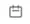
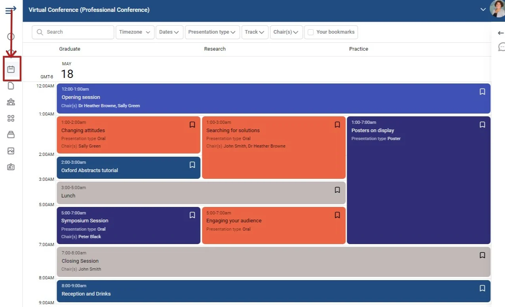
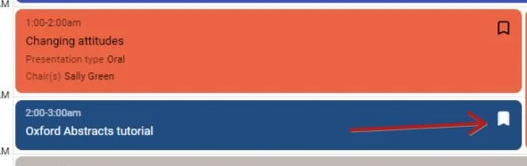
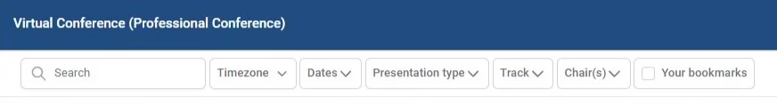
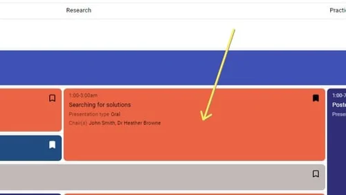
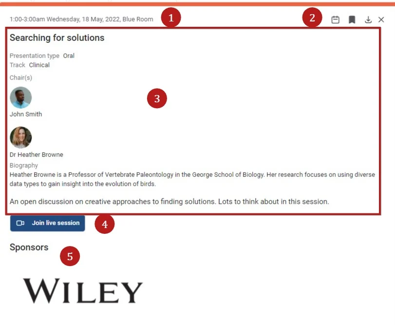
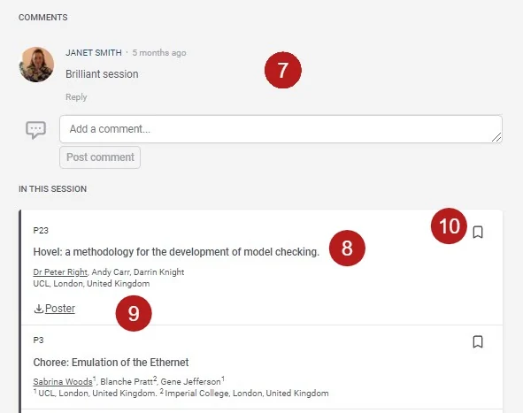
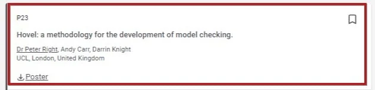
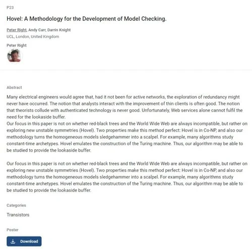
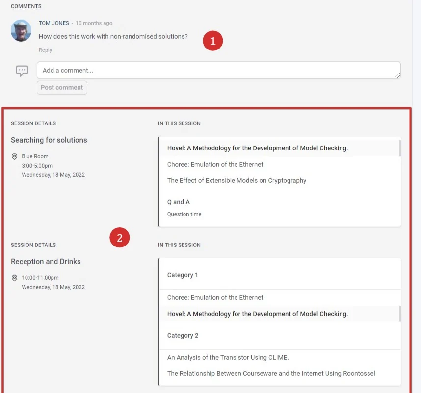

Viewing sessions and content in the conference program
For conference attendeesOrganising the event?
#
Once you have created an account and logged in to the conference, you will be taken to the welcome screen. Click the top icon shown below in the top left hand corner of the screen, then Schedule* to reveal the program / schedule.
*NB The section titles in the menu will be vary. The program / schedule is always denoted by the calendar icon.


You will see all the sessions in the table. You will notice some icons in the top right of each section. These are bookmarks that you can click to add as favourites. When checked, the icons will appear with a fill, as opposed to an outline (unchecked).

You can search and filter for sessions according to the fields across the top of the program.

Or click directly on a session.

Clicking on a session will reveal the following:
NB All the fields below will differ according to conference settings
1) Time, date, location (if in a physical space)
2) From Left to right)
Add to calendar(Google, 365, Outlook, Yahoo or download as an .ics)
Bookmark (as above)
Download the session a a .doc format. (If permissions allow)
Close session to return to full schedule.
3) Session details
4) This icon will appear if a live session. Click the link at the appropriate time to join the session.
5) The sponsor of the session.

In the lower part of the session panel,
7) You can comment on the session, if you wish. You can also comment on individual pieces of content when clicking abstracts and content (see below, and if permissions allow).
8) The list of abstracts / content
9) Downloadable content specific to each abstract (if permissions allow).
10) You will also be able to bookmark any content.

Abstracts / content
The session view will give an overview of the abstract, including ID or program code, title, authors and affiliations (with the presenter underlined). Click on the title to reveal more (if settings permit, this is dependent on whether you are viewing the public or private program).

You can then view the full content of the abstract.

In the lower half of the panel you can 1) Comment or respond to comments and 2) View a list of sessions where this abstract also appears.

Did this page solve it?
Thanks — this helps us fix it.